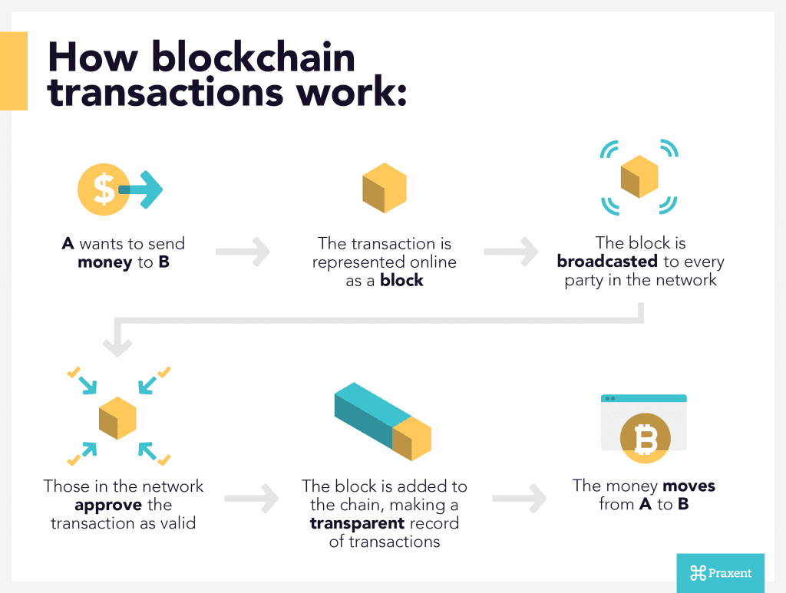

En 2008 la “Crise bancaire et financière de l'automne 2008” plus communément appelée le “crise de 2008” a commencé. La valeur du dollar a fortement baissé.

Une grosse partie du monde a été impactée, on peut le voir sur le PIB (produit interieur brut) de beaucoup de “pays du Nord” qui a fortement baissé. Le PIB est un indicateur économique pour mesurer la production de richessse par des agents économiques (citoyens, entreprises...)

Bon d’accord c’est intéressant mais qu’est ce que ça a voir avec les outils collaboratifs? Une personne ou un groupe de personnes sous le pseudonyme Satoshi Nakamoto a créé le 3 Janvier 2009 le bitcoin. Bien que ce soit plus probable que ce soit un groupe de personnes. Personne n’est sûr de l’effectif ou de l’identité des créateurs du bitcoin. La photo représentative de ce groupe/personne est la suivante :
Ce Personnage a donc créé le bitcoin une monnaie virtuelle qui ne dépend d’aucune banque ni d’aucune entitée. Le code est public, open source et accessible sur github https://github.com/bitcoin/bitcoin. C’est donc une monnaie qui permet d’être échangée en P2P (Pair à Pair). Dans le monde bancaire du bitcoin ce n’est pas une banque centrale qui fait le transaction mais vous. Le premier achat avec du bitcoin a été réalisé le 25 mai 2010, Laszlo Hanyecz (Un collaborateurs du bitcoin) a acheté un pizza pour 10 000 soit 6595827,48€ avec la valeur qu’il a aujourd’hui. Espérons pour lui qu’elle était bonne au moins. Pour faire une transaction n’importe qui peut mettre à disposition sa puissance de calcul afin de permettre de faire des transactions avec le bitcoin. On appelle cela le minage.

Malheureusement des entreprises de minage (l'enrergistrement des transactions dans la blockchain) se sont créées, elles achètent des supercalculateurs et les mettent à disposition. La source de revenu est la commission que reçoit la personne qui a miné le bloc. Si une de ces entreprise obtient 51% (ou plus) de la puissance de calcul du bitcoin elle pourra en générer. Heureusement grâce à la force des outils collaboratifs et aux gens qui mettent à disposition leurs puissance de calcul, personne (même un gouvernement) n’est proche de “l’attaque des 51%”.
Les médias font aussi de l’ombre à la blockchain sans le vouloir. En parlant des bitcoins et des investisseurs, beaucoup de personnes ont voulu en acheter, et c’est pour cela que le Bitcoin a eu une hausse de valeur très rapide. Mais cela n’a pas duré, car les gens ont remarqué qu’il était impossible d’acheter du pain dans la boulangerie du coin. Ils se sont donc débarrassés de leurs bitcoins ce qui a fait chuter leur valeur.
La première estimation du bitcoin a étée faite le 5 octobre Un bitcoin valait environ 0,001 USD, soit environ 0,00071 €. Son pic le plus haut a été atteint le 10 mars avec une valeur de 1340$ soit 1227€.
En conclusion, le Bitcoin est une monnaie révolutionnaire qui pourrait unifier le monde si tout le monde l’adopte. “Toute invention passe par 3 stades L’absurde, le danger et l'évidence” Malheureusement aujourd’hui nous sommes dans la phase du danger, à cause des préjugés et des variations de sa valeur. D’ici quelques années les cryptomonnaies seront un évidence comme internet aujourd’hui. Le bitcoin est un exemple parmis tant d’autres mais la monnaie de demain ne sera peut-être pas le Bitcoin. Mais nous pouvons dire avec certitude ce sera une cryptomonnaie.